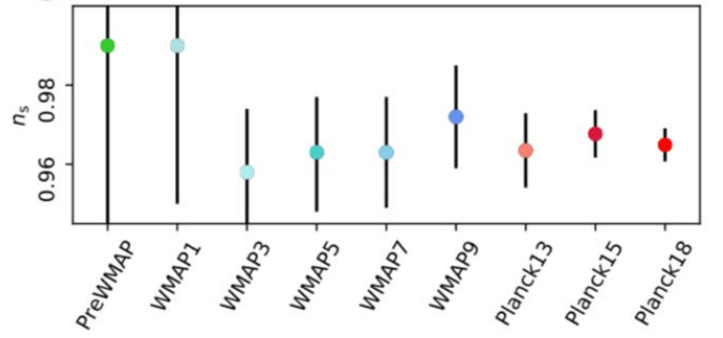

notion of fixed order, matched and merged (pros and cons to be identified)
NLO fully automatized “NLO revolution”, but NNLO is possible only for \((2)\to (2)\) process
importance of mixed-coupling perturbative developpement, especially in tails of distributions (not trivial interplay of higher-order QCD and EW corrections) .
This starts to be relevant for EFT parametrization of new physics (mixing between \(\alpha_{s}\) and \(1/\Lambda\)).
1.2 Precision measurements in the top quark sector
two interactions to study: top-gluon vertex and top-W-bottom vertex
general strategy: assume one is standard and probe deviation for the other
spin correlation for top-gluon interaction (production) and relies on bare top quark decay since the spin information is not diluted in the hadronisation
\(B \to D^{(*)} \ell\nu\) probing lepton universality with \(\tau\) and \(e/\mu\) at the tree level through the ratio between \(\ell=\tau\) and \(\ell=e/\mu\) BR (\(R_D\)).
\(B \to K^* \ell^+\ell^-\) probing lepton universality between \(e\) and \(\mu\) at the 1-loop FCNC level, using angular distribution (e.g.\(P_5\)) and ratio of BR in \(\mu\mu\) and \(ee\) (\(R_{K}\)).
Anomaly observed in \(B \to D^{(*)} \ell\nu\)Angular anomaly observed in \(B \to K^{*} \ell^+\ell^-\)Anomaly observed in \(B \to K^{*} \ell^+\ell^-\)
Attempt to explain it using two main approaches: standard model effective field theory with dimension 9 and 10 operators, and direct model building approach based on coloured neutral boson coupled to \(\tau-\mu\) or lepto-quarks.
Suggestion of other observables to measure in order to better identify which scenario is actually realized (e.g.\(pp \to \tau\tau +X\) and \(B\to K^{*}\tau\tau\)).
2 Theoretical approaches
2.1 3rd generation prediction with SUSY+VLQ
Models, Phenomenology and Experimental Results - presentation
predicts \(y_{t}\), \(y_{b}\), \(y_{\tau}\) & 3 gauge couplings \(\alpha_{i}\) using IR fixed points
EFT of the SM with interesting operator counting depending on the dimension, and it can be pretty large (see figure later)!
Dimension 5 are called Weinberg operators and dimension 6 was studied extensively. They are fairly understandable (tri-gauge couplings, correction to the Higgs potential, correction to the Higgs-gluon couplings)
One new idea to face hierarchy issue is to assume that electro-weak scale comes from inflation scenario by adding one field which quickly relax and makes the Higgs potential with a minima.
Pros & cons of EFT
General and relatively agnostic parametrization of new physics
No new (explicit) degree of freedom
Number of operator for each dimension (3 and 4 generations)
super noaves (SN), weak gravitational lensing (WL)
baryon acoustic oscillation (BA).
Introduction of a “new” observable \(\sigma_{8}\) probing large structure flucutation (\(\sigma_8\equiv\) RMS of mass in sphere of \(R=8H^{-1}\)Mpc)
Constraints starts to be sensitive to neutrino total mass, so results are presented with both floating mass and fixed mass.
Emphasis on \(H_0\) tension and precision measurement
there is a \(\sim 3\sigma\) tension between SN-based and CMB-based measurements
trying to find new data to arbitrate like “distance ladder with BAO”
how to reach 1% precision on \(H_0\)? Inlarge cepheid parallax measurements, include lens time delay, cluster count (mass) and gravitational waves created by binary system! Precise measurement could constrain neutrino mass.
Precision on Hubble constant versus time for two classes of measurementsImpact of few cosmological paramter on the tensionProbability of \(H_0\) value infered on GW of binary system, which a fully idependant measurement of the universe expension
Legacy data analyzed: constraints/measurements are obtained for
\(\Lambda\)CDM model based on the angular structure of the temperature fluctuations
polarization anisotropies (only E mode), which is a new & difficult measurement (polarizaton come from spin-dependant inverse compton diffusion of CMB photon on matter)
inflation scenario and properties (power spectrum of the fluctuations \(P(k)\) where \(k\) is the spacial frequency of the fluctuations
sensitivity to weak lensing (CMB photons sentivite to dark matter density between last surface scattering an now), using the four correlation point function (angle-angle correlation function). Weak lensing also convert E-mode into B-mode - which can also be used
Effective number of neutrinos and mass, and correlation with \(H_0/\sigma_8\) tension
Precision of parameter reaching the sub-percent level!
Model parameter
Mean
Std dev
Rel. err.
\(\Omega_b h^2\) Baryon density
0.02237
0.00015
0.007
\(\Omega_c h^2\) Dark matter density
0.1200
0.0012
0.01
100\(\theta\) CMB acoustic scale
1.04092
0.00031
0.0003
\(\tau\) Optical depth to reionization
0.0544
0.0073
0.13
\(\ln(A_s 10^{10})\) Primordial amplitude of perturbation
3.044
0.014
0.007
\(n_s\) Primordial Scalar spectral index
0.9649
0.0042
0.004
\(H_0\) Hubble parameter today
67.36
0.54
0.008
\(\Omega_m\) Total matter density
0.3153
0.0073
0.023
\(\sigma_8\) Matter perturbation amplitude
0.8111
0.0060
0.007
Impact of effective number of neutrinos on \(H_0\)
Measurement of the power spectrum index \(n_s\) (defined as \(P(k) \sim k^{n_s}\) versus time. \(n_s=1\) implies inflation but \(n_s\) has to be lower than 1 to have a end to the inflation phase. This conclusion is very general and additional dependency of power spectrum can be checked, like \(n_n(k)\) or addional \(\ln(k)\) termCorrelation between the effective number of neutrinos, the hubble constant and matter perturbation amplitude. Reducing the tension of \(H_0\) is possible by increasing \(N_{\text{eff}}\) but then it degrades \(\sigma_8\)Weak lensing measurement on CMB photons based on four-point correlation function (ie angle-angle correlation function)
Presentation of internal anomalies and tension with other experiments, such as:
low part of the angular spectrum which is not understood (large angle correlations), so called lack of power issue
odd-even asymmetry showing different structures for odd \(\ell\) and even \(\ell\), which is not expected in the current predictions.
these are hypothetical objects with a formation at the early stage of the universe expension
formed from a density or a metric curvature fluctuation. Assuming these fluctuations are gaussian, their rate and magnitude can be related to the PBH mass.
exisiting constraints says that the density of PBH should be small, leading to some fine tuning of matter density fluctuation paramters
LIGO/VIRGO detection of merging BH makes the detection of small PBH possible!
Since the origin of super-massive BH (galactic center) is unknown, PBH could be a candidate - which would play a leading role in structure formation
possible candidate for dark matter too.
Current exclusions of primordial black holes for different formation rates and massesSchematics of masses of objects detected using gravitational waves, and an interesting whole at intermediate masses
Analogy between particle physics and inflation: correlations functions drives microscopic behaviour of particle interactions that we see with detector, while they might generate original fluctuations that we can detect on earth
Main ingredients
inflation explains how non-causally connected regions get correlated with primordial fluctuations and super fast expansion
the talk presented a microscopic approach to explain primodial fluctuations based on (relatively) general assumption
particle physics formalism is used, in term of \(n\)-points correlation function (aka propagator in case of \(n=2\)).
structure of general 2-points correlation is fully fixed by symetry/locallity/unitarity : need to go beyong i.e. 3 and 4-points function
Particle creation due to metric curvature (deSitter space in the inflationary phase) appears naturally from mathematical property of the correlation function (continuity)
Basic principle of where these correlations functions manifest, and where do we measure themOnce analytical structure is studied, a nice paraellel can be done with EFT in particle physics, getting a more complete behaviour of primordial fluctuations structures
Main drawback of this approach is that predictions are quite blow current experimental sensitivities, but not without reach (with optimistic extrapolations)
4 My personal notes
4.1 Process simulation in HEP
1. Fixed-ordered vs Matching vs Merging (not confirmed)
a. fixed-order this is pure matrix element (ME) calculation with a fixed multiplicity in the final state, e.g. no additional hard jet, but additional jets are possible via parton showering (PS)
b. matching this approach corrects parton kinematics generated by PS using the ratio ME to PS prediction in order to match the two prediction in the intermediate region. This works only at LO and allow to have e.g.\(pp \to t\bar{t}+q\bar{q}+X\) where the \(X\) are radiations from PS.
c. merging generate parton either from showering process or matrix-element calculation depending on a given criteria (based on \(p_T\) or \(\Delta R\) or both) to avoid double counting. This can be applied to ME with +1j, +2j, … +Nj and add all the samples together to have an accurate prediction. This works at NLO too.
2. What are the key ingredients of the “NLO revolution”?
The “NLO revolution” (ie. the automation of NLO differential cross-section computation for any model) was possible using the mathematical structure of the amplitudes:
1. subtraction formalism: enable non-divergent integrands for real corrections. Indeed, real corrections only have IR divergence exactly compensated by IR divergence from virtural corrections. But it’s important to be able to compute each contribution independantly.
2. master integrals: enable to reduce 1-loop calculation to a set of standard integral with some coefficients. Those are computable using tensor reduction or unitarty cuts.
3. Matching & merging: enable to exploit most accurate calculations depending on the phase-space region, and group them together to get a final prediction.
4.2 Spin and helicity in top quark physics
How W helicity and top spin correlation analysis are linked?
W helicity analysis considere every top quark individually and is insensitive to correlation in a given pair
Spin correlation analysis specifically of the two top in the pair. It is sensitive to the W helicity though.
Mode details
The two observables are connected simply because of the angular momentum conservation: \[
h\equiv\vec{s}\cdot\vec{p}/|\vec{p}|~~,~~ \vec{s}_t=\vec{s}_W+\vec{s}_b+\vec{J}_{W,b}
\]
But:
the helicity analysis consider all top quarks together where the up and down states are averaged. Helicity of W are sentitive to the top quark decay
the spin correlation analysis looks at the correlation of the top and the anti-top in the same event. It does rely on the W helicity (since what is detected is the lepton coming from \(t\to Wb\to \ell\nu b\)), but it primarily probes the correlation of the top and the anti-top (e.g. (up,up) or (down,down)) induced in the production mode.
4.3 Quantum field theory
1. What a dipole moment means for elementary particle?
This was discussed in the context of the top quark (chromo-electric/magnetic dipole)
To dig out: look at \(e-n\) diffusion with structure functions
For a given vertex, radiatiative correction or additional interaction can give an effective “structure” which leads to dipole
2. What are Wilson loops and how do they link EFT and operators
Mentioned everywhere with EFT
It is a way to intergrate out heavy degree of freedom of the theory
3. What is the dimension of an operator and why it’s relevant for EFT?
Based on the dimension of the action \([S]=\hbar=1\)
Dimension on usual fields can be deduced \[
[\phi] = 1~,~~ [\psi] = 3/2~,~~ [A_{\mu}] = 1~, ~~[D_{\mu}] = 1~,~~ [g_{\text{gauge}}] = 0 .
\]
Dimension of a lagrangian term encodes information about divergences, and then renormalizability: \([g]<0\) is not renormalizable
The dimension of an operator (or interaction term in the lagrangian density) is given by the dimension of the action \(S\) which \(\hbar\) or \(1\) in natural unit: \[
S = \int \mathcal{L}(x) \, \mathrm{d}^nx
\]
Then, the dimension of lagrangian density is \(n\) (\(n=4\) in the SM). It is possible then to get the dimension of every field (scalar, spinnor, vector) and their derivatives and coupling \(g\), based on \([\mathcal{L}]=n\): \[
[\phi] = 1~,~~ [\psi] = 3/2~,~~ [A_{\mu}] = 1~, ~~[D_{\mu}] = 1~,~~ [g_{\text{gauge}}] = 0 .
\]
The last equality is related to renomarlisabitlity of the a theory (by counting momenta power in a an amplitude including loops): \([g]<0\) means that the theory is not renormalizable. EFT is a parametrization based on interaction terms (operators) of dimension \(d\) divided by a cut-off scale \(\Lambda^{d-n}\) so that \([\mathcal{L}]=n\): \[
\mathcal{L}_{\text{EFT}} = \sum_{d,i} \frac{c^d_i O^d_i}{\Lambda^{d-n}} = \sum_{d} \frac{\mathcal{L}_d}{\Lambda^{d-n}} = \mathcal{L}_{d \leq 4} + \frac{\mathcal{L}_{5}}{\Lambda} + \frac{\mathcal{L}_{6}}{\Lambda^2} + ...
\] where terms with \(d>4\) are not renomarlizable (divergences when \(\Lambda\to\infty\) can’t be absorbed by a finit number of redefinition) and are valid only for momentum lower than \(\Lambda\). A nice review can be found in arXiv:1804.05863.
Apprently dimension 5 operators are knows since the 80’s and contains neutrino masses and oscillations. The number of operators for a given dimension can quickly explode (cf. figure).